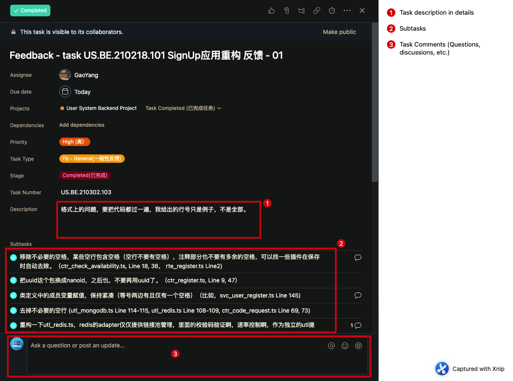
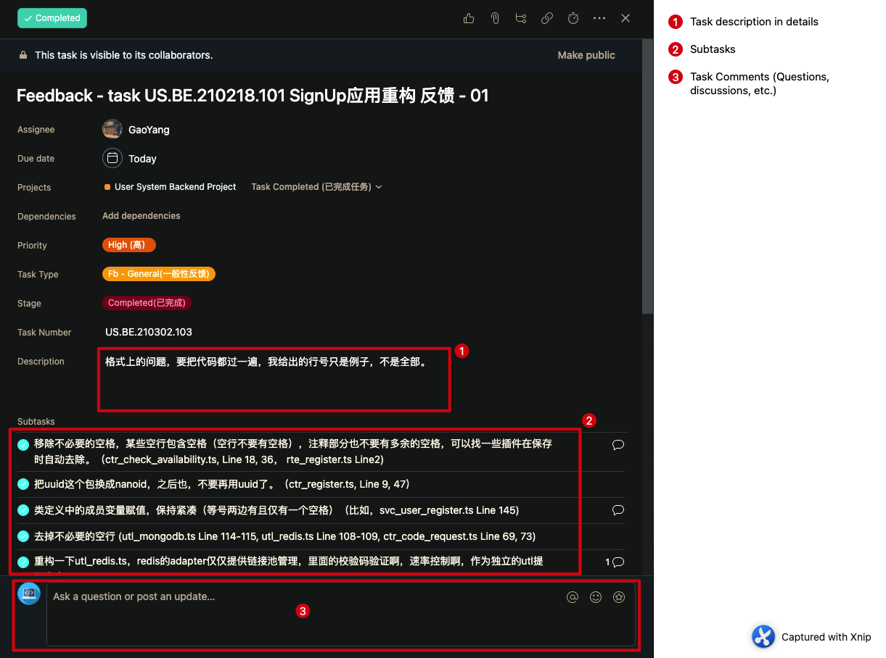

Project development process specification
In the process of project development, the assignment of tasks, the arrangement of tasks and the reading of documents related to tasks will be involved. In this document, the development process is explained mainly in the form of a flowchart. Please read this document carefully. If you have any questions, please contact.
- Travis (BackEnd/Devops):
travis.yuan@datareachable.com - Frank (FrontEnd):
frank.su@datareachable.com
Development flow chart
The following development flowchart mainly describes a series of steps in the development process
Detailed development flow chart
- Step 1： PM will get the new requirements
- Step 2： PM will analyze whether the currently requirements are pure ui development, or whether there are a lot of user interactions in the current requirements, and determine whether to write useCase based on the analysis
- Step 3.1.1： The current requirement is pure ui development, no useCase is required
- Step 3.1.2： PM will arrange the requirements in the form of tasks into the project corresponding to asana
- Step 3.1.3： Develop according to the assigned tasks and in accordance with the design style in figma
- Step 3.1.4： After the development is completed, the QA and testing phase will be carried out
- Step 3.2.1： There are a large number of user interactions currently required
- Step 3.2.2： PM analyzes whether the current demand requires a back-end API
- Step 3.2.2.1.1： Although there are a lot of interactions in current requirements, these interactions are pure front-end business logic and no back-end api is required
- Step 3.2.2.1.2： PM write useCase and upload it to the directory corresponding to oneNote
- Step 3.1.2.1.3： PM will arrange the requirements in the form of tasks into the project corresponding to asana
- Step 3.1.2.1.4： Develop according to the assigned tasks and compare the design style in figma and the business logic in useCase
- Step 3.1.2.1.5： QA and testing phase after development
- Step 3.2.2.2.1： There are a lot of user interactions, and a back-end api is required
- Step 3.2.2.2.2： PM write useCase and upload it to the directory for oneNote
- Step 3.2.2.2.3.1.1/3.2.2.2.3.2.1： The front-end/back-end PM will arrange the requirements in the form of tasks to the project corresponding to asana
- Step 3.2.2.2.3.1.2/3.2.2.2.3.2.2： Develop according to the assigned tasks and compare the design style in figma and the business logic in useCase
- Step 3.2.2.2.3.1.3/3.2.2.2.3.2.3： QA and testing phase after development
asana Detailed task arrangement
Detailed explanation of front-end asana tasks
In front-end development, the tasks received by each development should be as shown in the figure below


Each task is mainly composed of the following parts (prefix)-(specific gitHub repo)-(useCase ID)-(useCase/UI doc path)
- Prefix: The prefix mainly explains the task types of the current requirement, including four types of
UI,useCase,BugandTask(may be added according to task requirements in the future) - Specific gitHub repo: If there is only one github repo in the project, this option is empty. This option will only exist when there are multiple repo in the party project
- useCase ID: This option is the ID of useCase, developers only need to find the useCase corresponding to the ID in oneNote according to the
useCase/UI doc path - The directory corresponding to useCase/UI: When the prefix is
UI, the developer only needs to find the design of the corresponding directory in figma for development. If the prefix isuseCase, the developer needs to find the corresponding useCase in oneNote and find the design of the same path in figma
Example:
- Analyze the current task, you can know that the current task is of useCase
- Open oneNote, find the corresponding note according to the path of
profile/main page, and find the useCase whose ID is20210118003 - Open figma, find the corresponding design style according to the
profile/main pagepath, and find the design with ID20210118003
- Develop according to the obtained useCase document and figma design
BackEnd task workflow
General description
The general backend task workflow is as follows:
Notes:
- Code review is one of the task quality checking contents. The process should follow the instructions here.
- On task completion, assignees should submit relevant materials specified in backend submission requirements. This might include the following materials: Source code and README.md in GitHub, Docker Image in GitHub container registry and usage instruction doc(s), OpenAPI doc(s), API-UseCase matching doc(s), other design diagrams or doc(s) if applicable, and live demo/presentation if required, etc.;
- All tasks are immutable, except for minor changes. This means that once you complete a task, you should NEVER reopen and modify it again. Further feedback and follow-up tasks are created as new tasks with new task numbers. The quality of your original task is fixed and recorded into your performance review. You can only compensate it by the new task.
Backend workflow example
Step 1
Once a backend developer is involved in a project, he/she is invited to join a specific asana project. The project is managed by team leaders and members only have limited priviledges to avoid task modification by non-admin members.
Step 2
Tasks are assigned in asana projects.
Asana Project ExamplesStep 3
Task details are described in the corresponding Asana tasks.
When a RESTful API task is involved, currently RESTful API requests are given as Asana tasks from the frontend team. Team leaders are responsible for organisation of the API requests and distribute them to the team members (developers). Normally, such API requests are organised as a shared online spreadsheet.
To understand the details of RESTful API request, refer to the following section Backend API requirement example for detailed explanation on RESTful API task request.
 Asana Task Examples (List View)Asana Task Details 1Asana Task Details 2
Asana Task Examples (List View)Asana Task Details 1Asana Task Details 2Step 4:
Once completed, mark the asana task as completed and submit relevant materials. Refer to submission for examples.
Backend API requirement example
This section gives examples on how RESTful API tasks are handed out via Asana.
Asana Task Example
 Asana Task (RESTful API Requirement)
Asana Task (RESTful API Requirement)API Description Example
The RESTful API requirement details are given as an online Excel spreadsheet via Tencent file sharing tool (to allow easy access in mainland China).
 RESTful API Detailed Descriptions (in Excel Spreadsheet)
RESTful API Detailed Descriptions (in Excel Spreadsheet)